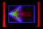

Serendipity
Unexpected, accidental discoveries in science, technology, engineering or life in general.
- quote from
Fullerene C60
Suggested reading: Serendipity: Accidental discoveries in science, by R.M. Roberts
